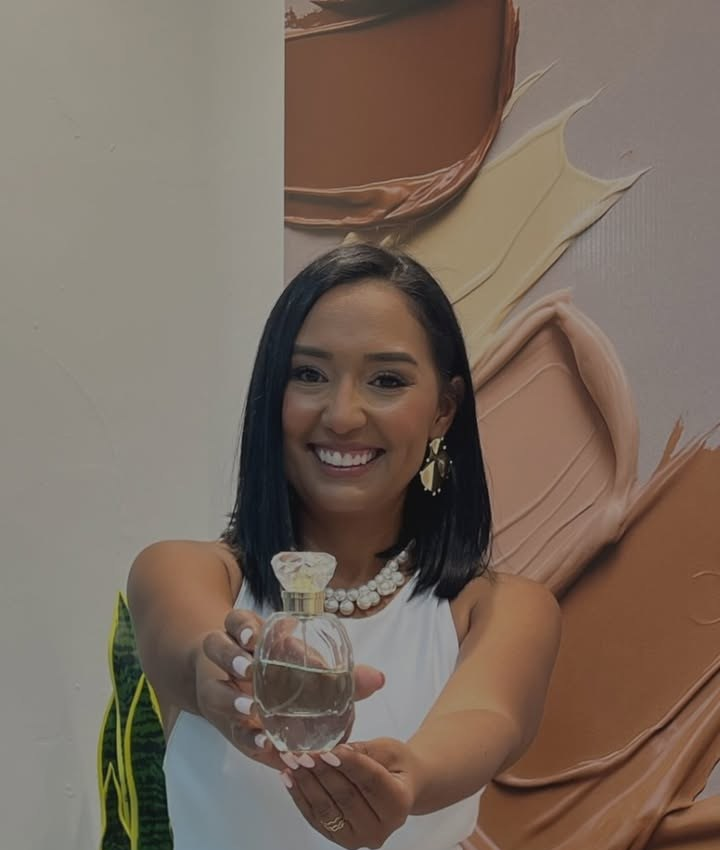

Mentora de marca personal · Barcelona / Lechería, Anzoátegui
Brilla con tu piel y construye un negocio digital rentable.
Soy Dayrrig Duarte: abogada de origen, Estratega de Imagen Internacional certificada y mentora de marca personal. Acompaño a mujeres que quieren construir un negocio propio dentro de la belleza, con su nombre por delante.
Estratega de Imagen InternacionalDiez años vistiendo mujeres influyentesComunidad de mujeres en Farmasi
Quién soy
No llegué a la belleza por casualidad. Llegué por siete decisiones seguidas, y la última fue la más difícil.
-
Derecho
Abogada graduada
-
Moda
Estudié Diseño de Modas
-
Imagen
Me certifiqué como Estratega de Imagen Internacional
-
Diez años
Vistiendo mujeres influyentes
Una década asesorando a mujeres y a marcas dentro y fuera de Venezuela.
-
PLURAL
Abrí mi propio estudio de moda en Lechería
-
El cierre
Lo cerré
La decisión que parte esta historia en dos.
-
Hoy
Farmasi, y una comunidad de mujeres
Mentora de marca personal y líder de una comunidad de mujeres dentro de la red global de Farmasi.
«Cerré mi estudio de moda para hacer algo que me llamaba a gritos…»
«Me uní a la red global de Farmasi, el lugar donde las mujeres diseñamos nuestro negocio para que nuestra vida vaya primero.»
Dayrrig Duarte
Cómo puedo ayudarte
Dos caminos. Los dos empiezan con una conversación, no con un catálogo.
-
Construye tu propio negocio de belleza
Te cuento cómo puedes empezar a diseñar tu propio negocio de belleza junto a mí, dentro de la comunidad de mujeres que acompaño.
Para ti si quieres ingresos propios y un lugar donde tu vida vaya primero.
-
Diseña tu rutina de belleza y bienestar
Te ayudo a diseñar tu rutina de belleza y bienestar, pensada para tu piel y para tu día real.
Para ti si quieres verte y sentirte bien sin improvisar cada mañana.

En esta página no hay lista de precios, y es a propósito: cada camino se conversa. Escríbeme por WhatsApp y vemos cuál de los dos es el tuyo.
En mis palabras
Lo que le digo a las mujeres que quieren vender sin sentir que están vendiendo.
No vendas catálogo, vende visión
Vender es servir a quien ya decidió cambiar
Las networkers que escalan no persiguen clientas. Construyen autoridad
Facturar bien no te salva de la soledad empresarial
Te enseñaron que la belleza es frívola
Escríbeme
Sin formularios que se pierden: esto abre WhatsApp con tu mensaje ya escrito.
Cuéntame quién eres y qué buscas.
Al enviar se abre tu WhatsApp con el mensaje redactado — solo tienes que darle a enviar. Así me llega completo y directo, ordenado desde el primer momento, en vez de perderse entre mensajes sueltos.
Así me llegará
Hola Dayrrig, vengo de tu página web. Quiero construir mi negocio de belleza junto a ti.